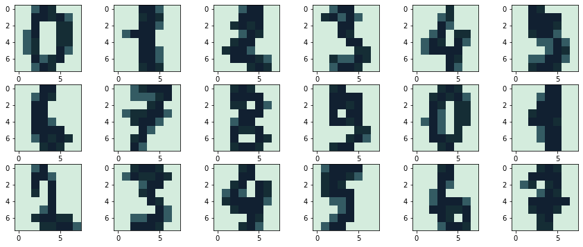

Scikit-learn perceptron
Here we will try perceptron inside scikit-learn library
[58]:
import matplotlib.pyplot as plt
import numpy as np
from matplotlib import colors
ll = ['#112031', '#152D35','#345B63', '#D4ECDD']
ll.reverse()
cmap = colors.ListedColormap(ll)
from sklearn.datasets import load_digits
from sklearn.linear_model import Perceptron
X, y = load_digits(return_X_y=True)
#what is random stat?
clf = Perceptron(tol=1e-1, random_state=15, l1_ratio=0.25)
clf.fit(X, y)
[58]:
Perceptron(l1_ratio=0.25, random_state=15, tol=0.1)In a Jupyter environment, please rerun this cell to show the HTML representation or trust the notebook.
On GitHub, the HTML representation is unable to render, please try loading this page with nbviewer.org.
Perceptron(l1_ratio=0.25, random_state=15, tol=0.1)
let’s take a look to the first 18 data inside X dataset
[59]:
test = np.zeros((18,8,8))
for i in range(18):
test[i,:,:]=np.reshape(X[i],(8, 8))
[60]:
fig, axs = plt.subplots(3,6, figsize=(15, 6))
axs = axs.ravel()
for i in range(18):
axs[i].imshow(test[i], cmap=cmap)

lets see what predicted by our perceptron
[57]:
results= clf.predict(X)
print(" prediction | real value | difference")
print("__________________________________________\n")
for i in range(18):
print("{:10d} | {:10d} | {:10d}".format(results[i], y[i], results[i]-y[i]))
prediction | real value | difference
__________________________________________
0 | 0 | 0
1 | 1 | 0
2 | 2 | 0
3 | 3 | 0
4 | 4 | 0
9 | 5 | 4
6 | 6 | 0
7 | 7 | 0
8 | 8 | 0
9 | 9 | 0
0 | 0 | 0
1 | 1 | 0
2 | 2 | 0
3 | 3 | 0
4 | 4 | 0
5 | 5 | 0
6 | 6 | 0
7 | 7 | 0
lets see how many results are accurate
[47]:
diff = results-y
nonzeros = diff[diff!=0]
nzlen=len(nonzeros)
alldata=len(y)
accuracy = (alldata-nzlen)/alldata
print(accuracy)
0.9710628825820813
Check output of perceprton score method
[49]:
clf.score(X,y)
[49]:
0.9710628825820813
Our estiamtion is very good !
[ ]: